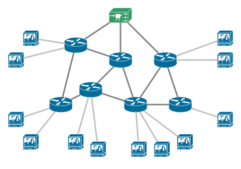
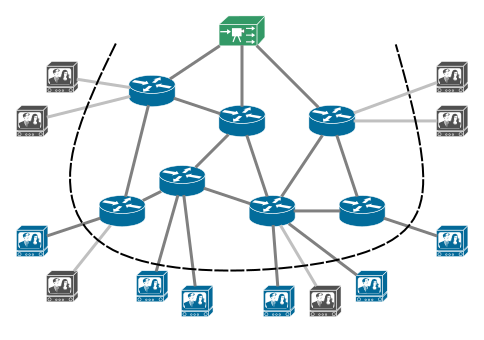

Your browser doesn't support the features required by impress.js, so you are presented with a simplified version of this presentation.
For the best experience please use the latest Chrome, Safari or Firefox browser.
Local Search for Multicast in
|
AuthorsKevin JadinLéonard Debroux |
PromotersPr. Olivier BonaventurePr. Yves Deville |
|
ReaderFrançois AubryAcademic year: 2013-2014 |
||
|  |
|  |
Unicast |
Multicast |
|
|
|
Cost : 13 |
Cost : 11 |
Classical networks |
Software-defined networks |
PIM-SSM |
Best choice |
| Nb edges | 12 | 20 | 30 | 50 | 100 |
| Time needed | 1ms | 1s | 18 min | 3.5 years | 1016 years |
|
|